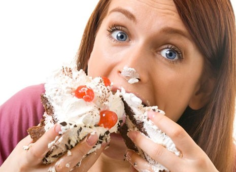
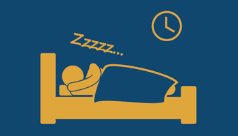
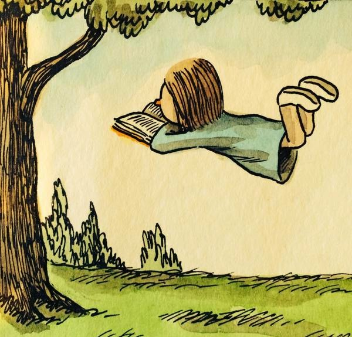

My Favourite Things
Here are a few things I really love




Los animales fueron imperfectos, largos de cola, tristes de cabeza. Poco a poco se fueron componiendo, haciéndose paisaje, adquiriendo lunares, gracia, vuelo. El gato, sólo el gato apareció completo y orgulloso: nació completamente terminado, camina solo y sabe lo que quiere. El hombre quiere ser pescado y pájaro, la serpiente quisiera tener alas, el perro es un león desorientado, el ingeniero quiere ser poeta, la mosca estudia para golondrina, el poeta trata de imitar la mosca, pero el gato quiere ser sólo gato y todo gato es gato desde bigote a cola, desde presentimiento a rata viva, desde la noche hasta sus ojos de oro. No hay unidad como él, no tienen la luna ni la flor tal contextura: es una sola cosa como el sol o el topacio, y la elástica línea en su contorno firme y sutil es como la línea de la proa de una nave. Sus ojos amarillos dejaron una sola ranura para echar las monedas de la noche. Oh pequeño emperador sin orbe, conquistador sin patria, mínimo tigre de salón, nupcial sultán del cielo de las tejas eróticas, el viento del amor en la intemperie reclamas cuando pasas y posas cuatro pies delicados en el suelo, oliendo, desconfiando de todo lo terrestre, porque todo es inmundo para el inmaculado pie del gato. Oh fiera independiente de la casa, arrogante vestigio de la noche, perezoso, gimnástico y ajeno, profundísimo gato, policía secreta de las habitaciones, insignia de un desaparecido terciopelo, seguramente no hay enigma en tu manera, tal vez no eres misterio, todo el mundo te sabe y perteneces al habitante menos misterioso, tal vez todos lo creen, todos se creen dueños, propietarios, tíos de gatos, compañeros, colegas, discípulos o amigos de su gato. Yo no. Yo no suscribo. Yo no conozco al gato. Todo lo sé, la vida y su archipiélago, el mar y la ciudad incalculable, la botánica, el gineceo con sus extravíos, el por y el menos de la matemática, los embudos volcánicos del mundo, la cáscara irreal del cocodrilo, la bondad ignorada del bombero, el atavismo azul del sacerdote, pero no puedo descifrar un gato. Mi razón resbaló en su indiferencia, sus ojos tienen números de oro.